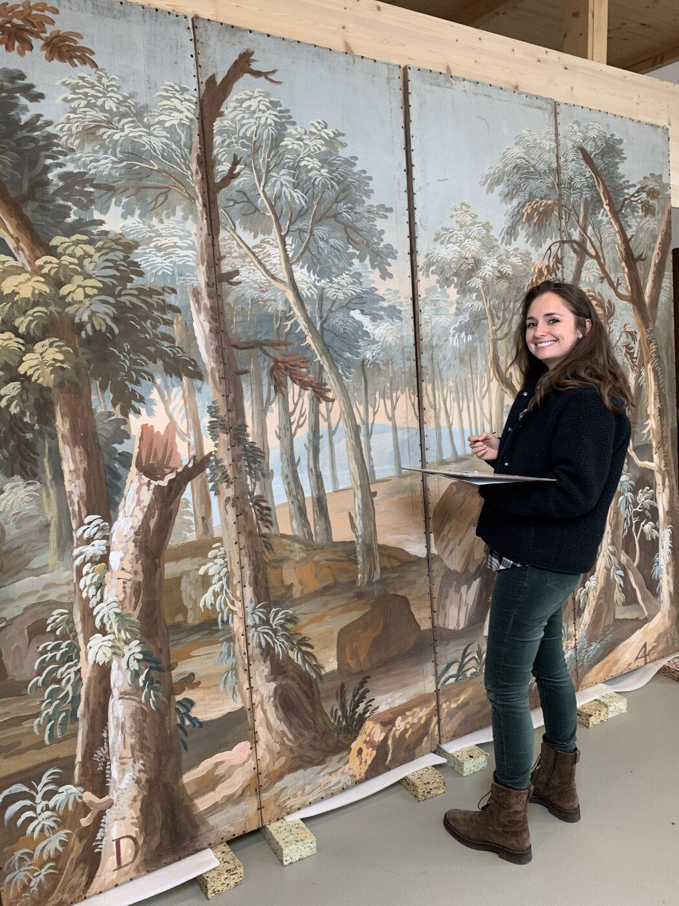

Founder Franziska Snape in front of the theatre backdrops from Hauteville, collection of the Swiss National Museum.
About Me
Preserving Art. Safeguarding History.
Art has fascinated me for as long as I can remember, not only for its beauty, but for the stories it tells. Studying art history was the first step, and the more I engaged with artworks and their history, the more my enthusiasm for the subject grew.
The turning point in my career came during an internship in Dresden, Germany. I witnessed a colleague examine a painting out of its frame. Through its materials, technique and earlier restorations, the artwork told an entirely new story, and I realised that conservator-restorers are, in many ways, detectives of art. I, too, wanted to be one of these detectives.
Today it's this combination of art, history, science and hands-on precision that drives me. To me, a conservator-restorer's task isn't to restore artworks, but to understand them, preserve their authenticity, and safeguard them for future generations.
Every artwork carries its own history, and contributing to its preservation is both a responsibility and a privilege. Whether for a museum, gallery, institution or private collection, I approach every object with curiosity, precision and respect. Conservation means preserving not just artworks, but the stories and craftsmanship they carry.
My Philosophy
To me, conservation means far more than treating visible damage. At its heart is the long-term preservation of an artwork's original substance: slowing ageing, stabilising damage and preserving authenticity. Restoration is carried out only where necessary for an object's stability, legibility or lasting integrity.
Every decision begins with understanding the artwork itself: its materials, history and the changes it has undergone. There's no standard solution; each object deserves an individual approach and tailored concept, grounded in scientific examination and the ECCO code of ethics, which places respectful treatment, documentation and enduring care at its core.
Education
Master of Arts in Conservation-Restoration
I specialised in the conservation and restoration of paintings and sculptures. My thesis on the Swiss Renaissance painter Hans Asper combined technical examination, conservation research and art-historical analysis, developed in collaboration with the Swiss National Museum, Zürich Central Library, Kunsthaus Zürich and the Kunstmuseum Solothurn, and was published academically.
Bachelor of Arts in Art History
My studies laid the foundation for my understanding of art, cultural history and visual analysis. That knowledge remains central to my conservation-restoration work today.
Professional Highlights
I've worked with museums, freelance studios, cultural institutions and private collections across Switzerland, Germany, Austria, the UK and Canada.
Museums & Cultural Institutions
- Swiss National Museum, Switzerland
- Dresden State Art Collections, Germany
- Kunsthistorisches Museum Vienna, Austria
- Kunstmuseum Basel, Switzerland
- Kunsthalle Mannheim, Germany
- Historical Museum of the Palatinate, Germany
Restoration Studios
- Hoess Conservation, Switzerland
- Katherine Ara Ltd., United Kingdom
Private Collections
- Ongoing supervision of a private collection, Canada